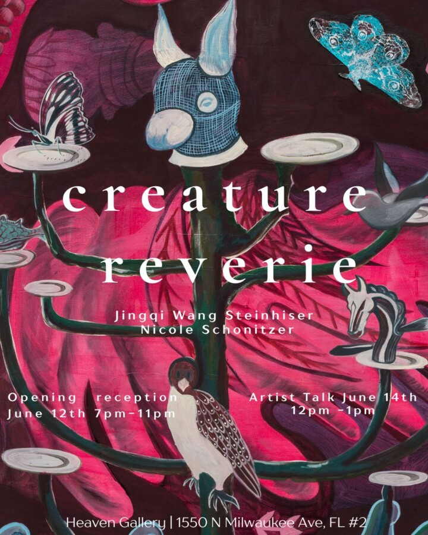

Creature Reverie
Creature Reverie
Nicole Schonitzer and Jingqi Wang Steinheiser
Steinhiser and Schonitzer paint worlds void of humans, populated instead by beings and animals that function as multifaceted symbols and populate worlds of internal liberation in each of their respective practices. Creature Reverie explores these worlds and their inhabitants.
Steinhiser, having lived a nomadic life in China, Russia, Mongolia, South Korea, and the USA, investigates the animal body as a traditional and modern symbol across these varied settings.
In her most recent works, she turns toward the concept of “home”: not as a physical shelter or fixed geographical location, but as an imagined psychological space shaped by memory, displacement, and inner world-building. In my recent paintings, houses emerge insistently and in shifting states: interior and exterior collapse into one another; houses tilt, fall, float, dissolve, or rest on clouds; they appear without doors, soaked, erupting, or wrapped in hair. The house is no longer a stable structure, but a living image; one that gathers the dispersed fragments of inner life. It becomes less an object in the world than what Gaston Bachelard describes as a space of daydreaming, where the imagination finds refuge and expands. Alongside these houses, animals inhabit interior spaces. Drawn from daily encounters, poetry, song, mythology, and ornamental forms, they accumulate into a personal symbolic language. Within the house, they are not simply placed but dwell, moving through rooms, occupying corners, and participating in layered, often ambiguous narratives. They function like figures within a dream, both familiar and estranged, carriers of memory and instinct. Yet this house does not protect against the external world in any literal sense. It behaves instead as a moving interior; a vessel of subjectivity that cannot be entered except by the one who imagines it. It is both shelter and cosmos; a small, contained universe that nonetheless opens outward into boundless psychological space.
The beings and forms (the ‘Guys’) of Schonitzer’s work exist in a symbiotic ecosystem situated in a bizarro-earth world, where they mostly inhabit giant bodily chambers, bathrooms, and the sea – spaces that are hidden, interior, wet, and gross. Here, there is power in softness, impulsivity is celebrated, and tenderness rules. The works in this exhibition are primarily set in the bathroom or baths or physically embody the Guys’ bathroom accessories. The Guys are at their most ingenious in the bathroom. They learn to make each other multiply through supernatural comb rituals. They rig their bidet for group use. They experiment in making personal ablutions collaborative and invent new ones entirely. They build the infrastructure of their baths with curves and tiers to suit their squishy bodies and proclivity for fun. For them, the bathroom is a place of rest, play, and experimentation. If chaos unfolds, it’s fine; everything is already tiled. In producing this work and building the world of the Guys, Schonitzer is concerned with the bathroom as a place that both underscores and provides a glimpse of possible resolution to many problems of contemporary, American life. She sees it as a venue to remove oneself from the addictive technology that keeps us surveilled and accessible at every waking moment, to reconsider what is personal and what can be shared and, thus, to move away from shame and towards shamelessness, and to sit with oneself in the literal and figurative sense, opening up a pathway for personal transformation and boundless creativity.
Both artists render visions of impossible places; places where the constraints of the human world fall away, and they find complete, authentic homes for their interior selves.